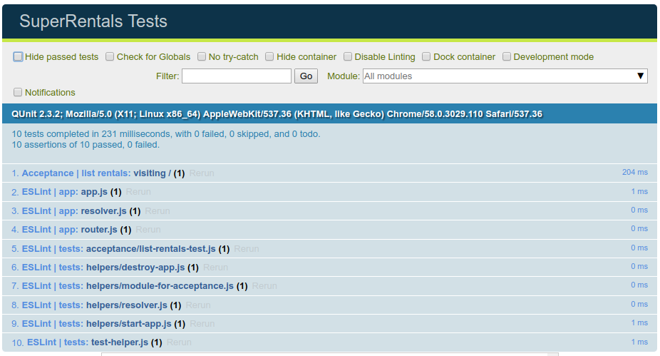
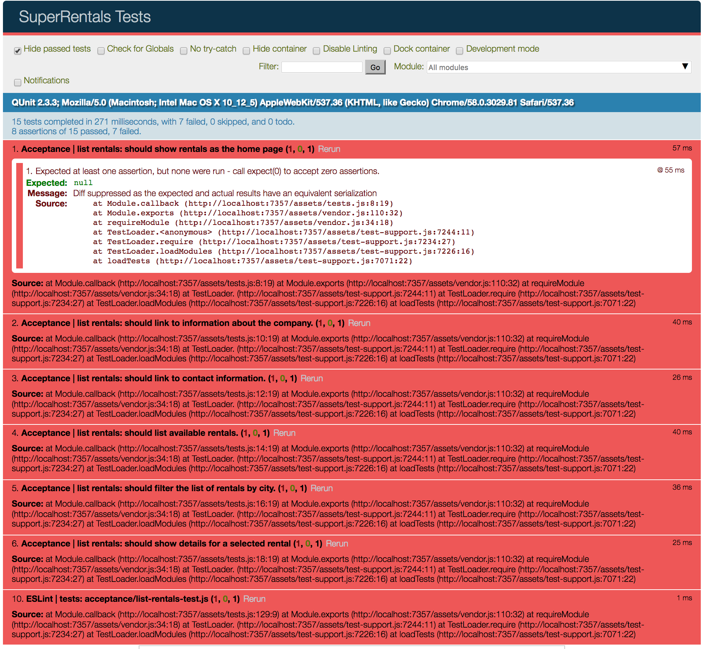

Planejando seu aplicativo Melhorar esta página
Mostramos o básico da configuração de um aplicatovo Ember, agora vamos construir um aplicativo para um site de aluguel de imóveis, chamado Super Rentals. Começaremos criando uma página inicial, uma página sobre e outra de contato.
Antes de começarmos, aqui está a aparência final do nosso aplicativo.

Queremos ter alguns objetivos, para isso nosso aplicativo deve:
- Mostrar imóveis para alugar
- Ter um link com informações sobre a empresa
- Ter um link com informações de contato
- Listar imóveis disponíveis
- Filtrar imóveis por cidade
- Mostrar mais detalhes de um imóvel selecionado
O restante desta página, dará a você uma introdução aos testes de aceitação do Ember. Você vai precisar configurar esses testes à medida que seu aplicativo for implementado. Nas próximas páginas deste tutorial, terá seções dedicadas a adicionar um teste para cada recurso novo que você implementou. Essas seções não são necessárias para funcionar seu aplicativo e você pode optar por pular essas etapas.
A partir deste ponto, você pode continuar na próxima página ou continuar lendo sobre testes Ember abaixo.
Testando seu aplicativo a médida que implementamos
Podemos representar os objetivos acima com Teste de aceitação do Ember. Os testes de aceitação interagem com o nosso aplicativo como uma pessoa real, mas é automatizado, ajudando a garantir que nosso aplicativo não quebre no futuro.
Quando criamos um novo Projeto Ember usando o Ember CLI, ele cria uma estrutura de teste JavaScript QUnit para definir e executar os testes.
Começaremos usando o Ember CLI para criar um novo teste de aceitação:
1 |
ember g acceptance-test list-rentals |
O comando acima terá o seguinte resultado, mostrando que ele criou um único arquivo chamado tests/acceptance/list-rentals-test.js.
1 2 |
installing acceptance-test create tests/acceptance/list-rentals-test.js |
Ao abrir esse arquivo você verá um código inicial que tentará acessar a rota list-rentals e testar se ela foi carregada. O código inicial foi criado para nos ajudar a criar nosso primeiro teste de aceitação.
Como ainda não implementamos nenhuma funcionalidade em nosso aplicativo, usaremos este primeiro teste para começar a executar testes em nosso aplicativo.
Para fazer isso, substitua as ocorrências de /list-rentals no teste para /. O teste iniciará o nosso aplicativo na url base, http://localhost:4200/ e, em seguida, fazer uma verificação de que a página foi carregar e que o URL seja a que queremos que seja.
| /tests/acceptance/list-rentals-test.js | |
1 2 3 4 5 6 7 8 9 10 11 12 13 14 15 |
import { test } from 'qunit'; import moduleForAcceptance from 'super-rentals/tests/helpers/module-for-acceptance'; moduleForAcceptance('Acceptance | list-rentals'); test('visiting /list-rentals', function(assert) { test('visiting /', function(assert) { visit('/list-rentals'); visit('/'); andThen(function() { assert.equal(currentURL(), '/list-rentals'); assert.equal(currentURL(), '/'); }); }); |
Algumas observações sobre este teste:
Os testes de aceitação são configurados chamando a função
moduleForAcceptance. Esta função garante que seu aplicativo Ember seja iniciado e encerrado durante cada teste.QUnit passa um objeto chamado
assertem cada função de teste. Umassertpossui funções, comoequal(), que permitem que seu teste verifique se algumas condições foram atendidas. Um teste deve ter um significado válido para ser bem-sucedido.Os testes de aceitação do Ember usam um conjunto de funções auxiliares de teste, como as funções
visit,andThen, ecurrentURLusadas acima. Vamos discutir essas funções com mais detalhes mais adiante no tutorial.
Agora, execute seu conjunto de testes:
1 |
ember test --server |
Por padrão, quando você executa ember test --server, o Ember CLI executa o Testem test runner, que executa Qunit no Chrome e PhantomJS.
O Google Chrome será aberto automaticamente mostrando 10 testes bem-sucedidos. Se você selecionar a opção "Hide passed tests", você verá somente os teste de aceitação bem-sucedido, juntamente com 9 testes ESLint passando. O Ember testa problemas de sintaxe (conhecido como "linting") para cada arquivo usando ESLint.

Adicionando testes de aceitação
Conforme mencionado anteriormente, o nosso teste inicial garantiu que tudo funcionasse corretamente. Agora vamos substituir esse teste pela lista de tarefas que queremos que nosso aplicativo manipule.
| /tests/acceptance/list-rentals-test.js | |
1 2 3 4 5 6 7 8 9 10 11 12 13 14 15 16 17 18 19 20 21 22 23 24 25 26 27 28 29 |
import { test } from 'qunit'; import moduleForAcceptance from 'super-rentals/tests/helpers/module-for-acceptance'; moduleForAcceptance('Acceptance | list-rentals'); test('should show rentals as the home page', function (assert) { }); test('should link to information about the company.', function (assert) { }); test('should link to contact information.', function (assert) { }); test('should list available rentals.', function (assert) { }); test('should filter the list of rentals by city.', function (assert) { }); test('should show details for a selected rental', function (assert) { }); test('visiting /', function(assert) { visit('/'); andThen(function() { assert.equal(currentURL(), '/'); }); }); |
A execução do ember test --server agora mostrará que 7 testes falharam. Cada um dos 6 testes que configuramos acima falhará, mais um teste de ESLint falhará dizendo: assert is defined but never used. Os testes acima falharam porque QUnit requer pelo menos uma verificação para cada condição (conhecida como assert).
À medida que avançamos neste tutorial, usaremos esses testes de aceitação como nossa lista de verificação. Uma vez que todos os testes estão passando, teremos cumprido nossos objetivos de alto nível.
